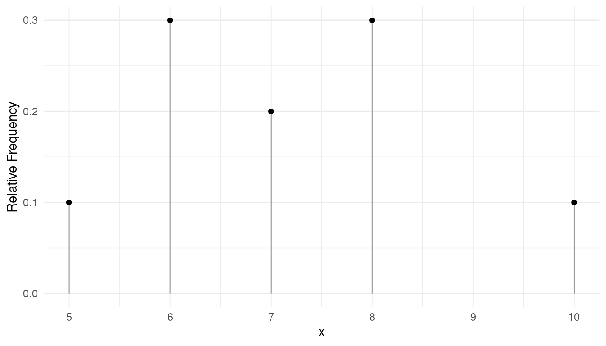
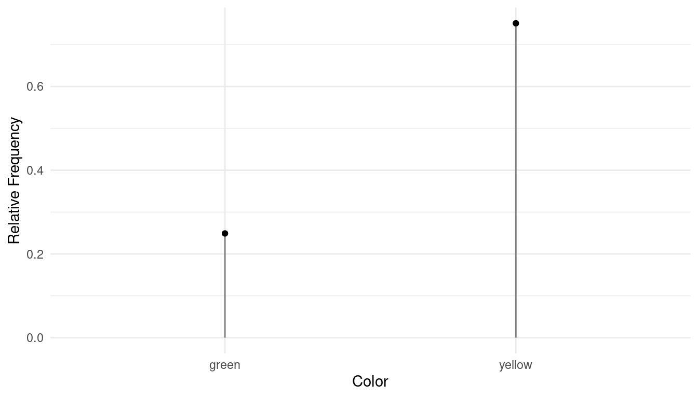
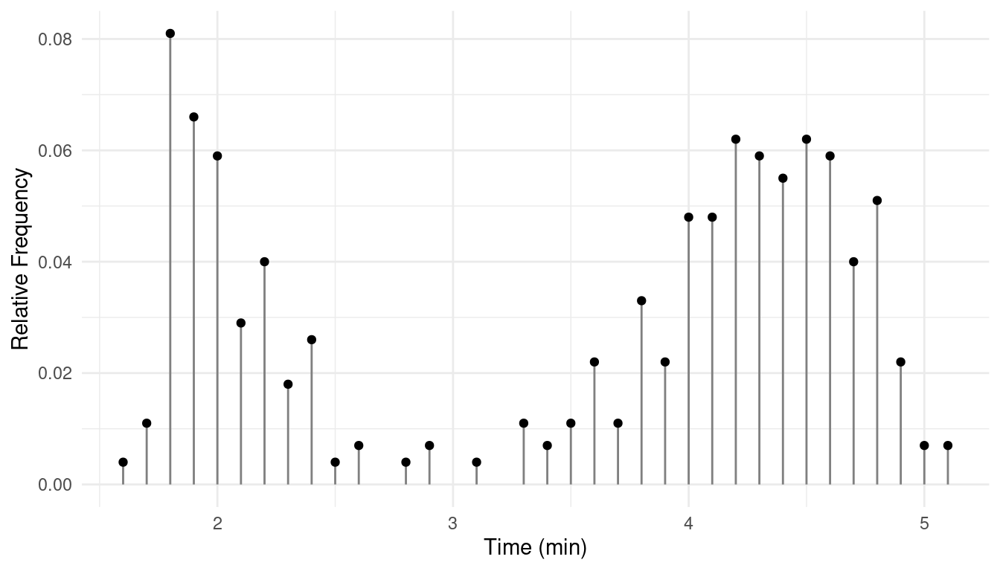
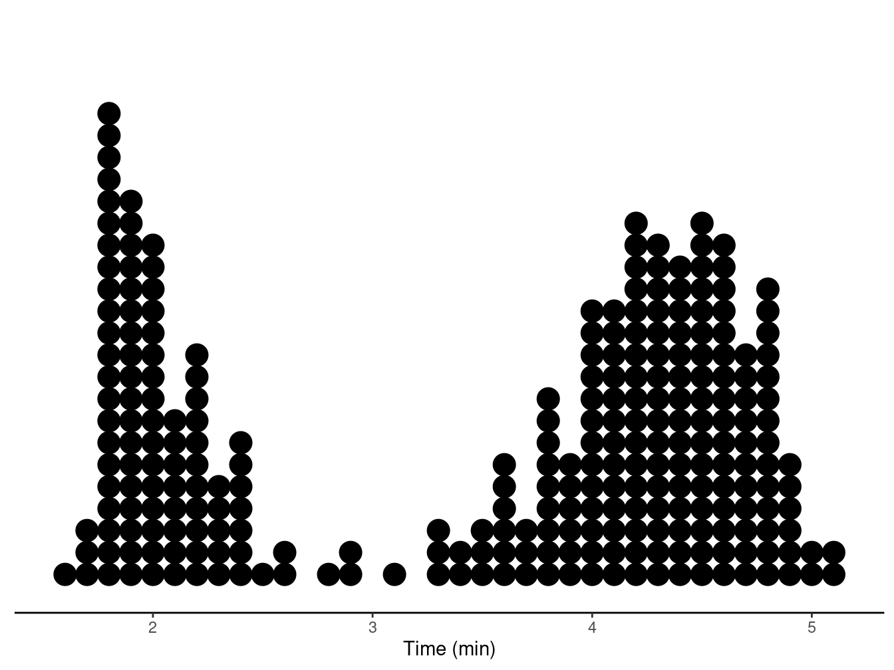
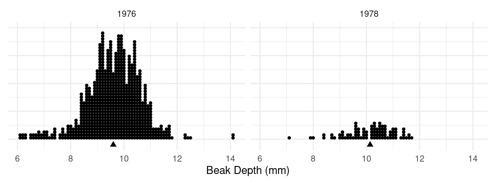
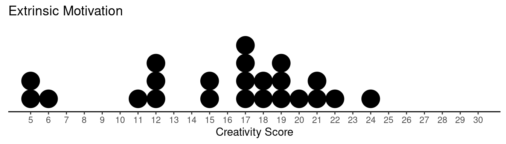
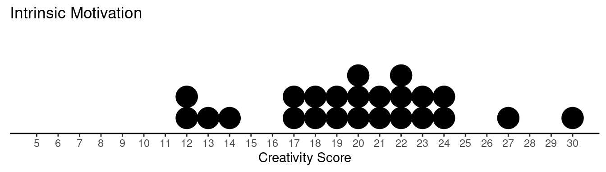
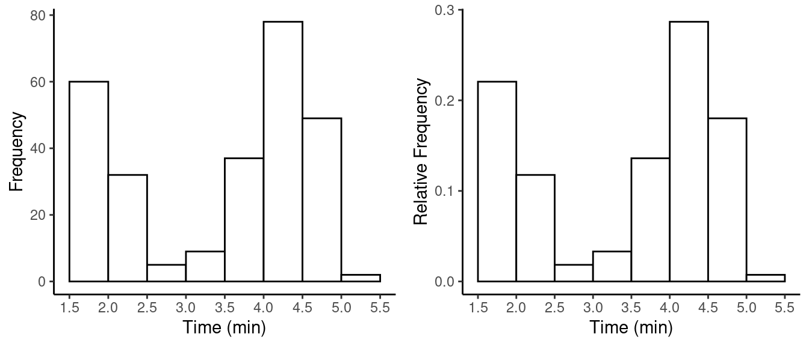
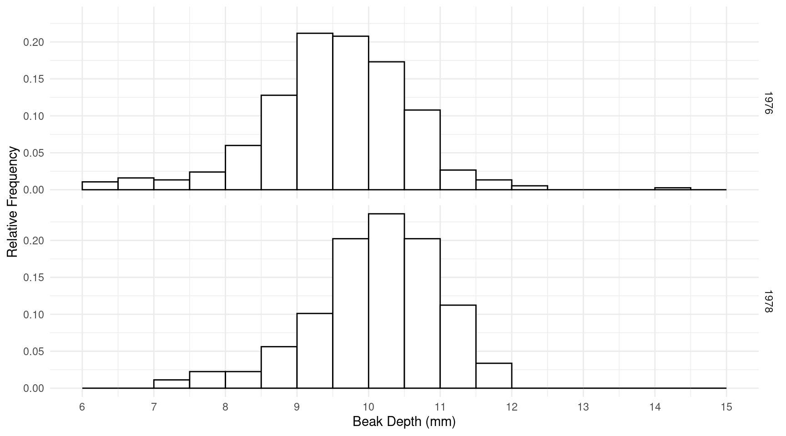

You can also download a PDF copy of this lecture.
The distribution of the observations of a variable gives (a) the values that occur and (b) how often each value occurs. The concept of a distribution is a useful way to characterize the observations in a sample or population.
Example: The following is a hypothetical set of observations of examination scores
8, 6, 8, 6, 5, 10, 7, 6, 7, 8
The “how often” is usually described using frequency (i.e., how often the value occurs) or relative frequency (i.e., the proportion of the observations assume that value). Later we will make use of cumulative relative frequency (i.e., the proportion of observations equal to or less than that observation).
| Score | Frequency | Relative Frequency | Cumulative Relative Frequency |
|---|---|---|---|
| 5 | 1 | 0.1 | 0.1 |
| 6 | 3 | 0.3 | 0.4 |
| 7 | 2 | 0.2 | 0.6 |
| 8 | 3 | 0.3 | 0.9 |
| 10 | 1 | 0.1 | 1.0 |
Example: Consider the following 200 observations of the number of deaths due to horse or mule kicks in Prussian army units between 1875 and 1894.1
0, 1, 1, 0, 0, 2, 2, 0, 1, 0, 0, 0, 0, 1, 2, 1, 0, 0, 0, 0, 1, 0, 1, 0, 0, 2, 2, 1, 0, 0, 1, 0, 1, 1, 2, 0, 0, 2, 2, 0, 1, 0, 2, 3, 0, 0, 0, 3, 0, 0, 1, 0, 0, 0, 1, 0, 3, 0, 1, 0, 0, 2, 1, 0, 0, 0, 0, 0, 1, 0, 1, 1, 1, 0, 2, 4, 0, 0, 0, 0, 1, 1, 0, 0, 0, 0, 0, 1, 2, 0, 0, 0, 1, 1, 1, 0, 0, 0, 0, 0, 0, 1, 1, 1, 0, 0, 2, 1, 1, 1, 2, 2, 2, 0, 0, 0, 0, 1, 1, 1, 1, 0, 0, 0, 1, 0, 0, 1, 0, 0, 1, 0, 0, 0, 1, 0, 0, 2, 0, 1, 0, 1, 0, 0, 0, 1, 0, 1, 0, 0, 1, 0, 1, 0, 0, 0, 0, 2, 1, 1, 0, 2, 0, 1, 0, 1, 0, 0, 1, 0, 0, 0, 0, 1, 0, 1, 1, 1, 2, 1, 0, 1, 1, 1, 2, 0, 1, 1, 0, 0, 0, 1, 2, 0, 0, 1, 0, 0, 1, 1
| Deaths | Frequency | Relative Frequency | Cumulative Relative Frequency |
|---|---|---|---|
| 0 | 109 | 0.545 | 0.545 |
| 1 | 65 | 0.325 | 0.870 |
| 2 | 22 | 0.110 | 0.980 |
| 3 | 3 | 0.015 | 0.995 |
| 4 | 1 | 0.005 | 1.000 |
We can talk about the distribution of a categorical variable as well, although we may not use cumulative relative frequency if there is no natural order to the variable values.
Example: In one of Gregor Mendel’s classic studies, he bred 8023 pea plants and observed the color of the pea pods.
| Color | Frequency | Relative Frequency |
|---|---|---|
| green | 2001 | 0.249 |
| yellow | 6022 | 0.751 |
Note: Relative frequency has been rounded to the third decimal place.
There are a variety of ways to graph a distribution.
Example: Graphical depiction of the distribution of the variable in the first example above.

Example: Grapical depiction of the distribution of color from Mendel’s pea plant study.

Another useful method is what is called a dot plot.
Example: Consider a sample of observations of eruption duration of Old Faithful.| Time | Frequency | Relative Frequency |
|---|---|---|
| 1.6 | 1 | 0.004 |
| 1.7 | 3 | 0.011 |
| 1.8 | 22 | 0.081 |
| 1.9 | 18 | 0.066 |
| 2 | 16 | 0.059 |
| \(\vdots\) | \(\vdots\) | \(\vdots\) |
| 5.1 | 2 | 0.007 |


Example: Dot plots of samples of observations of beak size for Finches on Daphne Major (Galapagos Islands) from before (1976) and after (1978) a drought in 1977.2 
Example: Creative writing students were “primed” with either extrinsic or intrinsic motivation.3 They were then asked to write a poem in the Haiku style about laughter. Each poem was then scored for “creativity” on a 40-point scale by judges.
| Treatment | Score | Frequency |
|---|---|---|
| Extrinsic | 5 | 2 |
| Extrinsic | 6 | 1 |
| Extrinsic | 11 | 1 |
| \(\vdots\) | \(\vdots\) | \(\vdots\) |
| Extrinsic | 24 | 1 |
| Treatment | Score | Frequency |
|---|---|---|
| Intrinsic | 12 | 2 |
| Intrinsic | 13 | 1 |
| Intrinsic | 14 | 1 |
| \(\vdots\) | \(\vdots\) | \(\vdots\) |
| Intrinsic | 30 | 1 |

A histogram is a specialized type of bar graph for showing the distribution of a quantitative variable. I have written a more detailed tutorial on how to create a histogram “by hand” with a manageable number of observations.
Example: Here are the “raw” data from the sample of observations of eruption time of Old Faithful, sorted in increasing order for convenience.
1.6, 1.7, 1.7, 1.7, 1.8, 1.8, 1.8, 1.8, 1.8, 1.8, 1.8, 1.8, 1.8, 1.8, 1.8, 1.8, 1.8, 1.8, 1.8, 1.8, 1.8, 1.8, 1.8, 1.8, 1.8, 1.8, 1.9, 1.9, 1.9, 1.9, 1.9, 1.9, 1.9, 1.9, 1.9, 1.9, 1.9, 1.9, 1.9, 1.9, 1.9, 1.9, 1.9, 1.9, 2, 2, 2, 2, 2, 2, 2, 2, 2, 2, 2, 2, 2, 2, 2, 2, 2.1, 2.1, 2.1, 2.1, 2.1, 2.1, 2.1, 2.1, 2.2, 2.2, 2.2, 2.2, 2.2, 2.2, 2.2, 2.2, 2.2, 2.2, 2.2, 2.3, 2.3, 2.3, 2.3, 2.3, 2.4, 2.4, 2.4, 2.4, 2.4, 2.4, 2.4, 2.5, 2.6, 2.6, 2.8, 2.9, 2.9, 3.1, 3.3, 3.3, 3.3, 3.4, 3.4, 3.5, 3.5, 3.5, 3.6, 3.6, 3.6, 3.6, 3.6, 3.6, 3.7, 3.7, 3.7, 3.8, 3.8, 3.8, 3.8, 3.8, 3.8, 3.8, 3.8, 3.8, 3.9, 3.9, 3.9, 3.9, 3.9, 3.9, 4, 4, 4, 4, 4, 4, 4, 4, 4, 4, 4, 4, 4, 4.1, 4.1, 4.1, 4.1, 4.1, 4.1, 4.1, 4.1, 4.1, 4.1, 4.1, 4.1, 4.1, 4.2, 4.2, 4.2, 4.2, 4.2, 4.2, 4.2, 4.2, 4.2, 4.2, 4.2, 4.2, 4.2, 4.2, 4.2, 4.2, 4.2, 4.3, 4.3, 4.3, 4.3, 4.3, 4.3, 4.3, 4.3, 4.3, 4.3, 4.3, 4.3, 4.3, 4.3, 4.3, 4.3, 4.4, 4.4, 4.4, 4.4, 4.4, 4.4, 4.4, 4.4, 4.4, 4.4, 4.4, 4.4, 4.4, 4.4, 4.4, 4.5, 4.5, 4.5, 4.5, 4.5, 4.5, 4.5, 4.5, 4.5, 4.5, 4.5, 4.5, 4.5, 4.5, 4.5, 4.5, 4.5, 4.6, 4.6, 4.6, 4.6, 4.6, 4.6, 4.6, 4.6, 4.6, 4.6, 4.6, 4.6, 4.6, 4.6, 4.6, 4.6, 4.7, 4.7, 4.7, 4.7, 4.7, 4.7, 4.7, 4.7, 4.7, 4.7, 4.7, 4.8, 4.8, 4.8, 4.8, 4.8, 4.8, 4.8, 4.8, 4.8, 4.8, 4.8, 4.8, 4.8, 4.8, 4.9, 4.9, 4.9, 4.9, 4.9, 4.9, 5, 5, 5.1, 5.1
| Time | Frequency | Relative Frequency |
|---|---|---|
| 1.5 to 2 | 60 | 0.22 |
| 2 to 2.5 | 32 | 0.12 |
| 2.5 to 3 | 5 | 0.02 |
| 3 to 3.5 | 9 | 0.03 |
| 3.5 to 4 | 37 | 0.14 |
| 4 to 4.5 | 78 | 0.29 |
| 4.5 to 5 | 49 | 0.18 |
| 5 to 5.5 | 2 | 0.01 |
Note: The intervals used are a matter of choice. But they should all be of the same width (here 0.5 minutes). Also we need a convention for when an observation falls on the border between two intervals. In my histograms such observations are always put in the lower interval.
The histogram is then drawn with the horizontal position of the bars corresponding to the interval, and the height of the bars corresponding to frequency or relative frequency. 
Example: Here are some histograms of the finch data.

A couple of properties of a distribution that we often want to measure are location and variability. Such properties are statistics (if the distribution is of the observations in a sample) or parameters (if the distribution is of the observations in a population).
The (arithmetic) mean is simply the average of the observations. This can be written as \[ \bar{x} = \frac{x_1 + x_2 + \dots + x_n}{n} = \frac{\sum_{i=1}^n x_i}{n} \] or \[ \bar{x} = \frac{1}{n}\sum_{i=1}^n x_i. \]
An alternative formula based on frequencies or relative frequencies can be written as \[ \bar{x} = \frac{1}{n} \sum_x x f(x) \ \ \ \text{or} \ \ \ \bar{x} = \sum_x x r(x) \] where the summation is over all distinct values of the variable, and \(f(x)\) is the frequency of the value of \(x\), and \(r(x)\) is the relative frequency of the value \(x\).
Example: Consider again the distribution of the number of deaths due to horse and mule kicks in Prussian army units.| Deaths | Frequency | Relative Frequency | Deaths \(\times\) Relative Frequency |
|---|---|---|---|
| 0 | 109 | 0.545 | 0 |
| 1 | 65 | 0.325 | 0.325 |
| 2 | 22 | 0.11 | 0.22 |
| 3 | 3 | 0.015 | 0.045 |
| 4 | 1 | 0.005 | 0.02 |
| Total | 200 | 1 | 0.61 |
The mean is \(\bar{x}\) = 0.61.
Note: The mean can be interpreted as the “balance point” of the distribution.
The median is defined as the “middle” value when the observations are sorted in increasing order, or the average of the two middle values if the number of observations is even.
Example: Consider the following 9 observations of a quantitative variable.
6, 6, 6, 7, 7, 8, 9, 9, 10
Example: Consider the following 10 observations of a quantitative variable.
6, 6, 6, 7, 7, 8, 9, 9, 9, 10
The mode is the value with the largest (relative) frequency.
Source: L. von Bortkiewicz (1898). Das Gesertz der kleinen Zhalen. Teubner, Leipzig.↩︎
Grant, P. (1986). Ecology and evolution of Darwin’s finches. Princeton, N.J.: Princeton University Press.↩︎
Amabile, T. (1985). Motivation and creativity: Effects of motivational orientation on creative writers. Journal of Personality and Social Psychology, 48(2), 393–399.↩︎